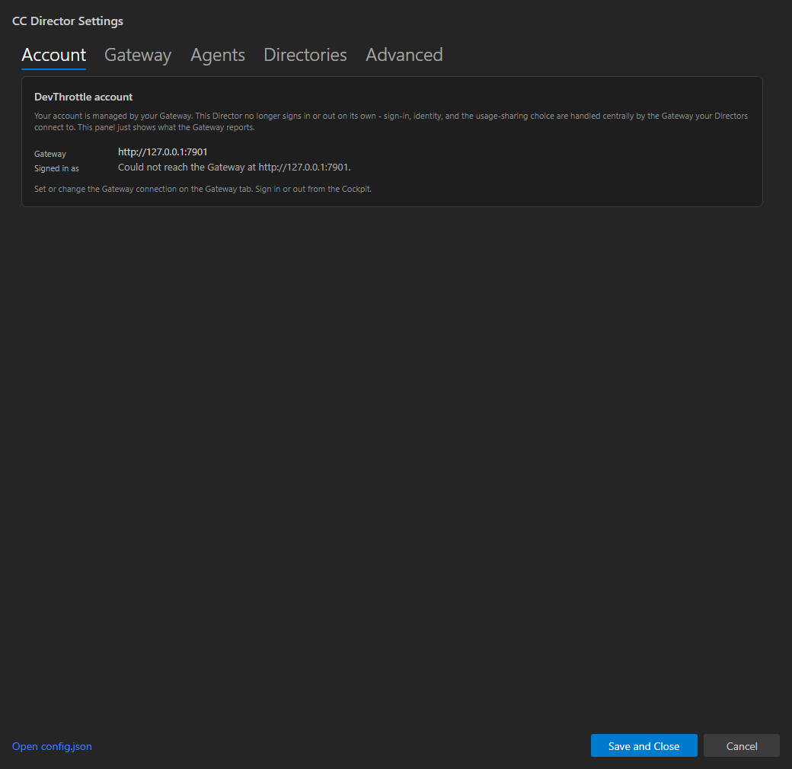

[Desktop] Remove the Director's account/consent/sign-in surfaces; show read-only gateway connection. This is the last Phase 3 issue of the Gateway Centralization epic.
GET /account/status (issue #638) via a new Director-side
GatewayAccountStatusClient (CcDirector.Core). The URL renders immediately and the identity
line is fetched in the background. The panel is read-only: no logout, no consent toggle
(logout lives on the Cockpit per #648; consent is centralized per #649). When the Gateway is unreachable
or reports signedIn:false, a clear informational line is shown - it is never a startup gate.FirstRunConsentDialog (the per-Director first-run consent screen),
AccountGateScreen (the Director "sign in to DevThrottle" surface), and their App wiring
(AccountGate/AccountService/ProceedToMainWindowAfterLogin/
ReturnToGateAfterLogout). Removed the now-dead Core types
AccountGatePolicy, GateDecision, and FirstRunConsent and their
tests. The Director boots unconditionally - no startup gate, no browser sign-in.Trap avoided: every shared Core.Account type the Gateway / GatewayApp /
Cockpit reuse (Phase 2: DevThrottleAccountService, FirstRunLoginCoordinator,
DevThrottleAccountFactory, WindowsProtectedTokenStore,
JwtAccessTokenValidator, TelemetrySettings, the token stores/validators, etc.) was
kept. Only Director-only dead code was deleted. The full solution (including Gateway, GatewayApp, Cockpit)
builds clean - see the build log.
| # | Criterion | Expected | Actual | Proof |
|---|---|---|---|---|
| AC1 | Settings → Account shows a read-only Gateway connection + identity panel (no logout, no consent toggle), sourced from the Gateway. | Panel shows the Gateway URL and the signed-in identity from /account/status; clear states for signed-out and unreachable; no controls. |
Live render of the real SettingsDialog shows Gateway: http://127.0.0.1:7901 and
Signed in as: person@example.com (via google) read from a real /account/status.
Signed-out shows "The Gateway is not signed in to DevThrottle"; unreachable shows "Could not reach the
Gateway". No logout/consent control present. |
PASS - 3 screenshots below |
| AC2 | FirstRunConsentDialog removed and no longer shown by the Director (no reference remains; build clean). |
Files deleted; no source reference; build clean. | Files deleted; grep shows zero references under src/. |
PASS - grep-dead-surfaces.txt |
| AC3 | No Director code path opens a devthrottle.com sign-in, and the per-Director "sign in to DevThrottle" surface is gone. |
AccountGateScreen + sign-in wiring deleted; no devthrottle.com sign-in in the Director source. |
grep over the Director source (and git-tracked Director files) shows no
AccountGateScreen, FirstRunLoginCoordinator, or devthrottle.com sign-in path. |
PASS - grep-director-no-signin.txt |
| AC4 | dotnet build cc-director.sln is clean (no dead-reference warnings); removed types have no lingering references. |
0 errors, 0 warnings across the whole solution. | Build succeeded. 0 Warning(s) 0 Error(s) for all projects including Gateway, GatewayApp, Cockpit. |
PASS - build-log.txt |
| AC5 | A screenshot shows the Director's read-only connection/identity panel. | Screenshot of the live panel. | settings-account-live.png (signed-in identity from /account/status). |
PASS - screenshot below |
Captured by a headless Avalonia + Skia render of the shipping SettingsDialog
(_render-harness/), driving the real GatewayAccountStatusClient against a local stub
serving the exact GET /account/status contract (issue #638). A headless render was used because
this agent runs in a non-interactive session where GDI screen capture of the on-desktop window is
unavailable; the render exercises the real panel XAML + the real client code end to end.

GatewayAccountStatusClientTests (new, CcDirector.Core.Tests) - 7 tests: not-configured (no call),
signed-in identity + Bearer header, no-token = no Authorization, signed-out, non-success = not-reachable
(no throw), transport failure = not-reachable (no throw), trailing-slash URL normalization. All pass.GatewayConsentAckTests updated for the removal of the per-Director FirstRunConsent
type (asserts the gateway acknowledgement never writes a legacy per-Director consent section). All pass.CcDirector.Core.Tests (2354 passed) and CcDirector.Avalonia.Tests (82 passed)
green after the deletions.Updated docs/cencon/architecture_manifest.yaml: removed the deleted
AccountGateScreen / stale FirstRunLoginDialog (Avalonia) and the
AccountGatePolicy/GateDecision component entry (Core); added the new
GatewayAccountStatusClient; reframed the remaining Core account-factory entry; bumped
last_updated to 2026-06-22. No security-profile change: the Director reads an existing
token-gated Gateway endpoint with the existing gateway token, the response carries no token, and the
token is never logged (DT-05); no new trust boundary or secret storage. security_profile.yaml
last_verified: 2026-06-09 is within its 30-day threshold.
I believe this is finished. All five acceptance criteria are met with committed proof, the full solution builds clean (Gateway included), and the relevant tests pass.